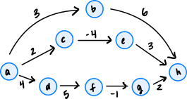
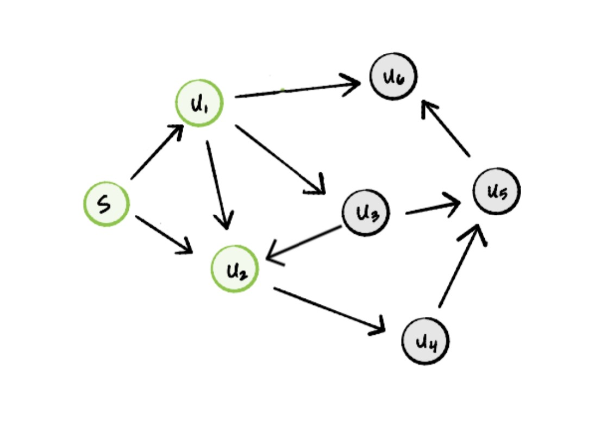
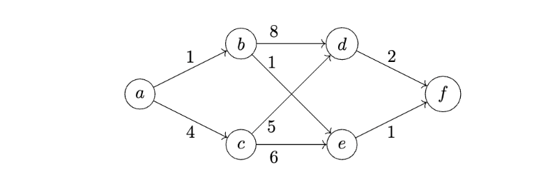
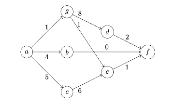

Tags: bellman-ford, dijkstra, shortest paths
Suppose you are planning a trip, and are intending to travel by air from San Diego to another city, with potentially multiple stops in between. You would like to schedule flights that take the least amount of time to get to your destination. In order to do this, you are thinking about these flights as a graph, where each airport is a node, and the weight of an edge connecting two airports corresponds to the amount of time it takes to travel between them.
Which algorithm should you choose to compute the fastest route from San Diego to each of the other cities? If two algorithms both find the fastest routes, pick the one which has a better time complexity.
Dijkstra's Algorithm. The graph is weighted, so BFS and DFS won't find shortest paths. Travel times are never negative, so both Bellman-Ford and Dijkstra's algorithm work, but Dijkstra's algorithm has the better time complexity.
Tags: bellman-ford, dijkstra, shortest paths
Suppose you are planning a trip by air from San Diego to another city, with potentially multiple stops in between. You are thinking about the flights as a graph, where each airport is a node and each flight is an edge. You don't care about the travel time, and instead care about the cost, so the weight of an edge is the cost of that flight. Also suppose that the airline has a special deal, where flights between certain cities will give you frequent flyer miles, or points towards free flights that you can use later in your trip. In other words, some flights have a negative cost. If you want to find the lowest cost route, which algorithm would be the best choice?
Bellman Ford. Some edge weights are negative, and Dijkstra's algorithm is not guaranteed to find shortest paths when there are negative edge weights. Bellman-Ford works with negative weights (as long as there are no negative cycles), and BFS and DFS don't find shortest paths in weighted graphs.
Tags: dijkstra
Consider running Dijkstra's Algorithm implemented using a priority queue on the graph below using node a as the source.

You may assume that graph.nodes produces nodes in alphabetical order.
On which iteration of the while loop is est[b] updated for the first time?
After six iterations of the while loop, what is the value of est[b]?
1 and 3. On the first iteration, \(a\) is popped from the priority queue and the edge \((a, b)\) is updated, setting est[b] to 3. The only edge into \(b\) is \((a, b)\), so est[b] never changes again and is still 3 after six iterations.
Tags: dijkstra
Consider the following graph. If the set \(C\) of correct nodes (shown in green) contains nodes \(s\), \(u_1\), and \(u_2\), how many exit paths from \(s\) through \(C\) exist?

Answer: 4. We defined an exit path to be any path starting at the source where all but the last node is in the correct set, and the last node is outside of the correct set. More informally: it's a path where the last node is gray and all of the other nodes are green. The four exit paths are (s, u1, u6), (s, u1, u3), (s, u1, u2, u4), and (s, u2, u4).
Tags: dijkstra
Suppose Dijkstra's algorithm is run on the graph shown below using node \(a\) as the source.

What will be the fourth node popped from the priority queue? (The first node popped is the source, \(a\).)
\(f\)
Tags: dijkstra
Suppose Dijkstra's algorithm is run on the graph shown below using node \(a\) as the source.

Suppose \(C\) is the set of ``correct'' nodes: that is, \(C\) is the set of nodes whose estimated distances are known to be correct.
What will be the fifth node added to \(C\) by Dijkstra's algorithm? (The first node added to \(C\) is the source, \(a\).)
\(b\)